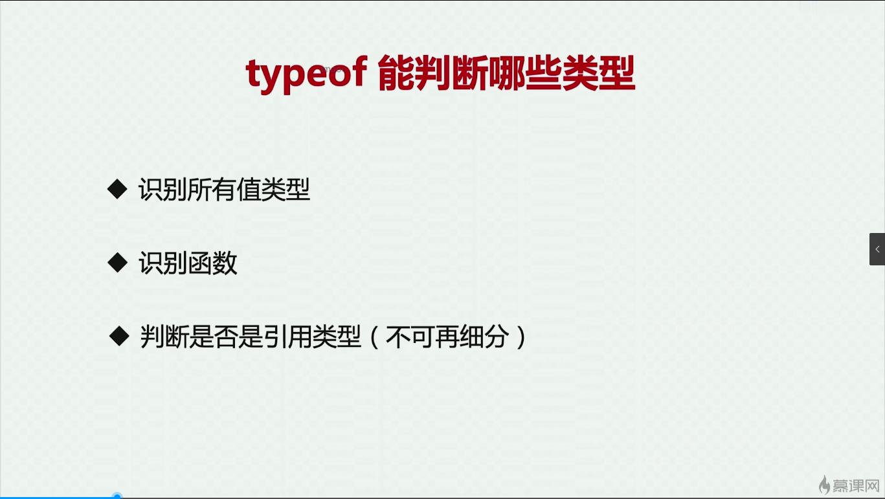
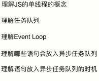
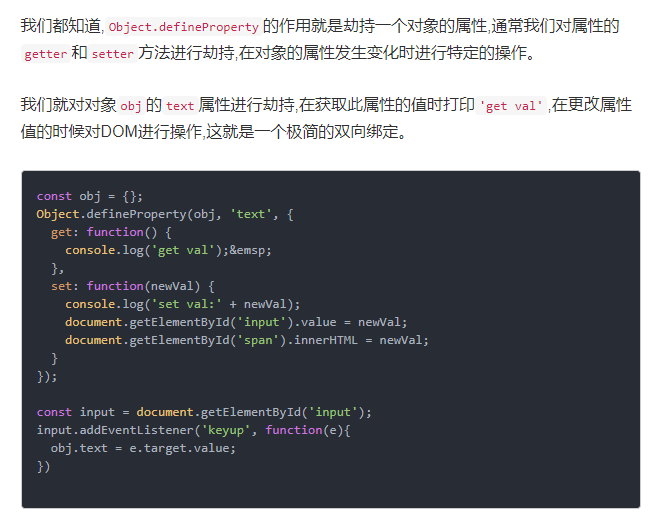
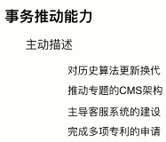

<!DOCTYPE html>
<header>
<div>
<section>定义一个区域</section>
<aside>定义页面内容的侧边框部分</aside>
</div>
<footer>
<nav>
<article>
<figure>
<dialog >
<menu>
<details>
<progress>
<audio>
<video>
<canvas>实例
- 自如谈兴趣,巧妙示实例,适时讨疑问(1)
- 节奏要适宜,切忌小聪明
实战
-
方向要对,过程要细
-
胆子要大,心态要和
jquery常见问题
1.核心架构
2.事件委托
3.插件机制
1.(慕课网:jq源码解析 架构 2-3)
ajQuery.fn = ajQuery.prototype = {
name: 'aaron',
init: function(selector) {
this.selector = selector;
return this;
},
constructor: ajQuery
}
ajQuery.fn.init.prototype = ajQuery.fn
2.(慕课网:jq源码解析 DOM 5-12)
简单来说就是把
target 到根节点 div 通过 node.parentNode 遍历一遍，然后找到对应的委托元素节点，如果符合就缓存起来用于之后的操作，可以通过 jQuery.event.handlers
方法我们可以获取类似这种的一组数据结构
$(document).on( "click" , "button",function(e){}就是当点击document时查看子元素是否是button,是就执行方法
参考网址:链接
3.(慕课网:jq源码解析 架构 2-5)
aAron.extend = aAron.fn.extend = function () {
var options, src, copy,
target = arguments[0] || {},
i = 1,
length = arguments.length;
//只有一个参数，就是对jQuery自身的扩展处理
//extend,fn.extend
if (i === length) {
target = this; //调用的上下文对象jQuery/或者实例
i--;
}
for (; i < length; i++) {
//从i开始取参数,不为空开始遍历
if ((options = arguments[i]) != null) {
for (name in options) {
copy = options[name];
//覆盖拷贝
target[name] = copy;
}
}
}
return target;
}
1.页面布局
5种方法写出三栏布局:
两边300px中间自适应
1.float
2.position
3.flex
4.table
5.grid
1.三个div的顺序应该是 left,right,center,原因是float属性可以让元素高度塌陷
2.CSS盒模型
1.标准模型:width=content
2.IE模式(怪异模式):width=content+padding+border
3.如何切换这两种模式:box-sizing:content-box(默认值,标准模式),可以切换为border-box(怪异模式)
常见问题/提问方式
1.基本概念:标准模型+ie模型
2.两种模型之间的区别
3.css如何设置这两种类型
4.js如何获取盒模型对应的宽高
5.根据盒模型解释边距重叠
6.BFC(边距重叠解决方案 )
注:如何解决边距重叠?
答:两个div,给第二个div添加一个父元素并设置overflow即可
解答:
4.ele.style.width/height
ele.currentStyle.width (IE)
window.getComputedStyle(ele).width
ele.getBoundingClientRect().width
5.和BFC有关,具体案例查看视频3-4CSS盒模型(一) 时间14分
BFC:块级格式化上下文
6. 触发BFC的方式（一下任意一条就可以）
1.float的值不为none
2.overflow的值不为visible
3.display的值为table-cell、tabble-caption和inline-block之一
4.position的值不为static或则releative中的任何一个
或者笔记:<<BFC的布局规则以及触发条件
DOM事件类
1.基本概念:DOM事件的级别
2.DOM事件模型(冒泡,捕获)
3.DOM事件流
4.描述DOM事件捕获的具体流程
5.Event对象的常见应用
6.自定义事件
DOM事件类:
DOM0:ele.onclick 或者写在标签上
DOM1: 1级DOM标准中并没有定义事件相关的内容，所以没有所谓的1级DOM事件模型.
DOM2:ele.addEventListener("click",function(){})
//DOM2支持多个事件绑定DOM3:ele.addEventListener('keyup',function(){})
//还有自定义事件事件模型:
捕获,
冒泡
事件流:
捕获
目标阶段
冒泡
描述DOM事件捕获的具体流程
window->document->html标签->body->.....->目标元素
冒泡相反
document.body可以获取body标签
document.documentElement可以获取html标签
document主要控制文档内容,如:document .title
window主要控制浏览器,属于BOM的一个对象,如window.close();
Event对象的常见应用
e.preventDefault() 阻止默认事件
e.stopPropagation() 阻止冒泡
e.stopImmdeiatePropagation() 绑定多个事件的同一个元素,如果不加此方法,多个事件会全部触发,加上之后,没加的那些就不会触发了
e.currentTarget 绑定事件的元素,也就是委托的父元素
e.target 当前被点击的元素(sourceElement早期ie)
参考:
自定义事件,模拟事件
var event=new Event('test');
ele.addEventListener('test',function(){})
ele.dispatch(event )//触发事件
缺点,无法加数据
var event=new CustomEvent('test',obj);
可以添加自定义参数
HTTP协议类
1.HTTP协议的主要特点
2.HTTP报文的组成部分
3.HTTP方法
4.POST和GET的区别
5.HTTP状态码
6.什么是持久连 接
7.什么是管线化
1.简单快速,灵活,无连接,无状态
2.请求报文:请求行,请求头,空行,请求体
响应报文:状态行,响应头,空行,响应体
请求行:http方法,页面地址,http协议,版本
请求头,key-value值,让服务端获取客户端信息,比如用户代理
空行:告诉服务器下面的事请求体了
请求体:get-post的内容
响应报文:
①报文协议及版本;
②状态码及状态描述;
③响应报文头，也是由多个属性组成;
④响应报文体，即我们真正要的“干货”.
3.GET 获取
POST 传输
PUT 更新资源
DELETE 删除资源
HEAD 获得报文首部
4.GET,POST区别:
5.状态码:
1xx：指示信息--表示请求已接收，继续处理.
2xx：成功--表示请求已被成功接收、理解、接受.
3xx：重定向--要完成请求必须进行更进一步的操作.
4xx：客户端错误--请求有语法错误或请求无法实现.
5xx：服务器端错误--服务器未能实现合法的请求.
6.持久连接:keep-alive,1.1开始支持
7.管线化
>管线化技术——客户端可以发送多次请求到服务端，而不需要等待上一次请求得到响应的时候才能进行下一次请求.实现并行发送请求
>前提是持久连接的情况下,打包请求和响应
>仅HTTP/1.1支持此技术（HTTP/1.0不支持），并且只有GET和HEAD要求可以进行管线化，而POST则有所限制.
原型链
1.创建原型链有几种方法
2.原型,构造函数,实例,原型链
3.instanceof原理
4.new 运算符
注:
什么是构造函数:当任意一个普通函数用
于创建一类对象时，它就被称作构造函数
于创建一类对象时，它就被称作构造函数
1.
2.
3.
实际上就是判断 实例对象.__proto__(可以无限__proto__) 与构造函数.prototype是不是引用的同一个地址
4.
new的工作流程：
1、创建一个空对象（var obj = {};）
2、使该空对象继承于构造函数的原型(obj.__proto__ = Foo.prototype;)
3、使用指定的参数调用构造函数 Foo ，并将 this 绑定到新创建的对象。(Foo.call(obj, x, y, z);)
4、由构造函数返回的对象就是 new 表达式的结果。如果构造函数没有显式返回一个对象，则使用步骤1创建的对象。（一般情况下，构造函数不返回值，但是用户可以选择主动返回对象，来覆盖正常的对象创建步骤）
1、创建一个空对象（var obj = {};）
2、使该空对象继承于构造函数的原型(obj.__proto__ = Foo.prototype;)
3、使用指定的参数调用构造函数 Foo ，并将 this 绑定到新创建的对象。(Foo.call(obj, x, y, z);)
4、由构造函数返回的对象就是 new 表达式的结果。如果构造函数没有显式返回一个对象，则使用步骤1创建的对象。（一般情况下，构造函数不返回值，但是用户可以选择主动返回对象，来覆盖正常的对象创建步骤）
1.对象就是一个实例
2.任何函数都可以当做构造函数,new完了一定是构造函数
3.构造函数都有prototype属性
4.只要在原型链上的,instanceof返回的结果都是true,比如 o3 instanceof M是true,那么 o3 instanceof Object也是true
5.TODO: new的原理
6.prototype是函数的内置属性，__proto__是对象的内置属性是JS内部使用寻找原型链的属性。
7.object.create()原理:
__proto__和prototype的区别
object.create()可传入参数,指定原型,object.create()本身创建的是一个空对象
js中的对象都是new +构造函数创建的。而这个构造函数就是我们定义的函数。
而所有的对象中都有__proto__属性，这个属性就是一个指针，指向构造函数中的prototype属性。
我们可以做一个简单的验证
var obj1={};
console.log(obj1.__proto__===Object.prototype);
//输出true面向对象
1.类的声明
function Animal (){
this.name="name";
}
es6:
class Animal2{
constructor(){
this.name="name";
}
}2.生成实例 new Animal(),new Animal2
3.继承>
call方法(通过构造函数实现继承)
缺点:无法继承来自Parent1的原型上的东西,只能部分继承
>原型链继承
缺点:
改变了s1的属性同时也会影响到s2,因为原型链中的原型对象是公用的
注:实际上new出来的新类.name是不存在的,通过查找新类.__proto__.name才会有,所以是在原型链上查找出来的
>组合方式(企业通用方法)
缺点:new 2次,构造函数被执行了2次
第一次:Parent3.call()的时候
第二次:Child3的原型new Parent3的时候
注:其实s3和s4分别有两套name和play,一份是call出来的,使用时直接s3.name,可以得出,一份是原型链上的s3.__proto__.name可以得出,该方法只是在call的基础上把parent的原型链继承给了Child3而已
优化
缺点:constroctor指向父类
优化
测试过程中也可以
function Parent4 () {
this.name = 'parent4';
this.play = [1, 2, 3];
}
function Child4 () {
Parent4.call(this);
this.type = 'child4';
}
Child4.prototype = Parent4.prototype;
Child4.prototype.constructor=Child4;
var s5 = new Child4();
var s6 = new Child4();
console.log(s5, s6);
console.log(s5 instanceof Child4, s5 instanceof Parent4);
console.log(s5.constructor);将constructor设置回来即可,但是父类和子类的
constructor都变成子类了
>终极优化

var o=Object.create(parent)是把参数parent当做原型对象传给o的,所以o并不具备parent的属性,但是o的__proto__具有,因为o.__proto__===parent
1.undefined,string,number,bool,symbol,
2.object(typeof null === 'object'),
3.function 
未掌握://1.constructor
//2.原型链
注:原型链继承由于new的时候是把原型对象上的属性复制给新对象,于是新对象相当于有两个相同属性,如果新对象为o,那么他既有o.name,又有o.__proto__.name,修改两个的时候互不影响,但是会影响原型链就是原型对象的.prototype,继而影响所有new出来的新对象
通信类
复习文件:
1.什么是同源策略及限制
2.前后端如何通信
3.如何创建ajax
4.跨域通信的几种方式
1.协议,域名和端口不一致的情况下无法操作
2.AJAX(同源)
WebSocket(不限制)
CORS(新的,不限制) 浏览器发现跨域时自动在请求头添加
Access-Control-Allow-Origin
Access-Control-Allow-Origin
3.
1).
var xhr = XMLHttpRequest?
new XMLHttpRequest():
new ActiveXObject('Microsoft.XMLHTTP');
2).
xhr.open(type, url, true);
xhr.send();
xhr.onload(function(){
data=xhr.responseText
})
4.
1.jsonp原理:利用script标签可以跨域
jsonp 利用script的异步加载
//todo:手写ajax代码,手写一遍jsonp.js
postMessage传递过来数据时监控方式:
window.addEventListener('message', onmessage, false);
Hash传递过来数据时监控方式:
window.addEventListener('hashchange', onmessage, false);
4.
jsonp 只能get
hash的改变不刷新页面,常用于iframe,onhashchange能监控hash的变化
postMessage:
WebSocket:
CORS:
安全类
1.CSRF
2.XSS
1.跨站请求伪造
攻击原理：
防御措施:.a加token验证
b.referer验证 来源
c.隐藏令牌 一个隐藏的token
2.跨域脚本攻击
防范措施:去除评论中的可执行脚本
两种攻击的区别 a.xss是向网页中插入脚本执行
b.csrf是利用漏洞执行接口,而且csrf依赖于用户登录网站
todo://清楚csrf原理
1.用户登录A网站,并生成一个cookie
2.用户访问B,B有一个链接指向A,
3.用户点击钓鱼链接,于是带着cookie就去了A,达到了模拟用户操作的目的
防范:加token,因为token是惟一的黑客只能带着cookie去访问,而得不到中的数据,所以也得不到token
算法类
1.排序
2.堆栈,队列,链表
3.递归
4.波兰式和逆波兰式
1.
快速排序：
选择排序：
希尔排序:
冒泡排序: 原理是临近的数字两两进行比较,
按照从小到大或者从大到小的顺序进行交换
按照从小到大或者从大到小的顺序进行交换
选择排序是跟某一个数值去换,插入排序是找到位置插入
2.
3.
4.
没答上来的技巧:1.先理解题目的意思,实在看不懂,问面试官可否给点提示
2.判断使用哪种算法,分解难度,想到哪写到哪
3.写出伪代码
4.卡住的地方问面试官
5.说出用哪种算法,说出原理
function debounce(fn, delay = 500) {
// timer 是闭包中的
let timer = null
return function () {
if (timer) {
clearTimeout(timer)
}
timer = setTimeout(() => {
fn.apply(this, arguments)
timer = null
}, delay)
}
}节流
function throttle(fn, delay = 100) {
let timer = null
return function () {
if (timer) {
return
}
timer = setTimeout(() => {
fn.apply(this, arguments)
timer = null
}, delay)
}
}
1.pop,删除数组最后一个元素,返回值是删除的那个元素,
2.push数组末尾添加一个元素,返回值是数组长度
3.unshift在数组最前面插入数据,返回长度
4.shift,删除数组第一个元素,返回值是删除的那个元素,
5.forEach,some,every,reduce都不是纯函数 注意,他们都不是纯函数(纯函数不会改变原数据,也就是说没有副作用),
concat,map,filter,slice都是纯函数
6.push是concat的简化版,concat等于push时打平数组
1.slice是纯函数,作用:截取数组,返回截取的那部分内容
3.splice不是纯函数,作用:把指定位置的内容替换成传入的内容
es6的一些常用语法
1.变量声明const和let
2.模板字符串
3.函数默认参数
4.箭头函数
5.拓展的对象功能(简写键值对)
6.Spread Operator 展开运算符(三个点儿...)
7.import 和 export
8. Promise
9.Generators
1.let可以解决闭包问题
4.
//例如：
[1,2,3].map( x => x + 1 )
//等同于：
[1,2,3].map((function(x){
return x + 1
}).bind(this))
5.
function people(name, age) {
return {
name,
age
};
}6.
//数组
const color = ['red', 'yellow']
const colorful = [...color, 'green', 'pink']
console.log(colorful)
//[red, yellow, green, pink]8.
fetch('/api/todos')
.then(res => res.json())
.then(data => ({ data }))
.catch(err => ({ err }));9.
// 生成器
function *createIterator() { yield 1; yield 2; yield 3; }
//生成器能像正规函数那样被调用，但会返回一个迭代器
let iterator = createIterator();
console.log(iterator.next().value); // 1
console.log(iterator.next().value); // 2
console.log(iterator.next().value); // 3参考:
1.整篇文章:
2.Promise 原理:
箭头函数中的this和普通函数中的this对比
LocalStorage和sessionStorage的用法以及使用区别
localStorage的生命周期是永久性的。即使关闭浏览器，数据也不会销毁，存储大小一般为5M,需要主动去销毁
sessionStorage 的生命周期是在浏览器关闭前。
在整个浏览器未关闭前，其数据一直都是存在的。
在整个浏览器未关闭前，其数据一直都是存在的。
JS中BOM和DOM的区别与联系
javacsript是通过访问BOM对象来访问、控制、修改客户端(浏览器)，由于BOM的window包含了document，可以说，BOM包含了DOM(对象)，浏览器提供出来给予访问的是BOM对象，从BOM对象再访问到DOM对象，从而js可以操作浏览器以及浏览器读取到的文档
变量声明加 var 和不加 var 的区别
由于变量声明自带不可删除属性，比较var num = 1 跟 num = 1，前者是变量声明，带不可删除属性，因此无法被删除；后者为全局变量的一个属性，因此可以从全局变量中删除。
变量的提升
变量提升只提升函数名 而函数提升会提升整个函数题 注意：函数提升在变量提升上面。

1.一个页面从输入
URL 到页面加载显示完成，这个过程中都发生了什么？
（1）查找浏览器缓存
（2）DNS解析、查找该域名对应的IP地址,找到之后进行三次握手、重定向（301）、发出第二个GET请求
（3）进行HTTP协议会话
（4）客户端发送报头(请求报头)
（5）服务器回馈报头(响应报头),结束开始四次挥手
（6）html文档开始下载
（7）文档树建立，根据标记请求所需指定MIME类型的文件
（8）文件显示
jquery扩展
1.$.extend
2.$.fn.extend
//1.静态扩展
$.extend({
sayHello: function(txt) {
console.log('Hello,'+txt);
}
})
$.sayHello('world'); //调用
//2.实例扩展：
$.fn.extend({
myPlugin : function(txt) {
this.css('color','red')
}
})
$("a").myPlugin(); //调用
//并且实例扩展还能添加参数
options={color:'red',width:'100px'}
$("a").myPlugin(options);
//插件内部再使用$.extend合并对象$.extend(opt,options)Vuex
Vuex是一个状态管理器，用于管理某些值的变化，统一对值的操作，把组件共享的值抽取出来，以全局模式管理，方法使得控制值的方法可复用
1.Vuex中getters相当于一个过滤器，可以在其中添加方法，然后给组件的computed
2.mutations表示可以调用的方法
3.vuex的目的类似于将数据提取成model的形式，然后对model进行数据操作并封装成方法给vue的组件中调用：method对应mutations，computed对应state,getters
Promise原理
TODO:印象笔记可能把数据弄丢了,需要自己找找资料
Angular和Vue的差别
1.angular中的双向数据绑定是基于脏检查机制
vue的双向数据绑定是基于ES5的getter和setter来实现,
2.vue比angular更轻量, 性能上更高效, 比angular更容易上手, 学习成本低,
3.而vue可以有过个vue实例,ngview只能有一个, 不能嵌套多个视图
面向对象多态：
父类new子类，子类中的方法重写了父类，导致new不同的子类可以表现出不同的状态
二面/三面
赞美面试官研究的深,懂得多
渲染机制
1.什么是DOCTYPE及作用
2.浏览器渲染过程
3.重排Reflow
4.重绘Repaint
5.布局Layout
1:DTD文档类型定义,DOCTYPE作用是告诉浏览器是哪个DTD
都有哪些类型:
4.0有两种模式:严格模式,传统模式
区别:严格模式不包括展示性和弃用的元素比如<font>已经被废弃
2.渲染过程:
3.>
-
重排:定义:每个元素都有自己的盒子,浏览器根据CSS和js结算处结果让元素出现在他的位置,重新修改dom之后浏览器该做的事
触发条件:增加删除,修改dom节点会导致重排或重绘
>移动dom位置
>修改部分CSS,如宽高
>Resize或者Scroll窗口有可能
>修改网页字体
-
重绘:页面要出现的内容统统画在屏幕上
触发条件:DOM改动
CSS改动
repaint无法避免,减少方法:使用文档片段,一次添加
区别:元素或内容的重新绘制:比如元素颜色改变,形状改变,需要重绘,
位置改变则需要重[]排
视频4-1
因为放在最后页面先渲染html,没有样式,然后渲染到了css,如果网速不好或者电脑慢,会出现样式突然变化的现象,因为页面重绘了,导致了浪费计算机性能
因为js的加载会暂停页面的渲染,因为js里可能有会修改html内容的代码,放在html中间会导致页面渲染时间变长,极端情况下会导致用户看不到完整内容,放在head里都获取不到html元素
js运行机制

1.settimeout运行机制
2.
3.
4.
1.答案为 132,因为settimeout浏览器有最小时间,虽然写的是0,实际上也不会是0,浏览器优先响应同步任务
2.答案为A,while为死循环,而且是循环任务,所以永远不会输出B
3.答案还是A,由于js是同步的,虽然settimeout到时间了,但是while还没有执行完,B依然要等待
4.输出结果永远是4
解决方法:使用闭包
上面这个是错误的,会立即输出0-5
for (var i = 0; i < 5; i++) {
(function(i) {
setTimeout(function() {
console.log(i);
}, i * 1000);
})(i);
}event loop
任务队列,
执行栈空了之后继续监听任务队列,如果有,就取出来执行,反复的循环就是event loop
类似于call,apply,但是只绑定不执行
func.call(this,arg1,arg2);
func.apply(this,[arg1,arg2])闭包相关问题
a.闭包的作用:模拟私有变量
当一个function中包含(或return)另一个function,并且内部的function引用外部的变量,造成外部变量无法销毁,这样一大块代码就叫做闭包。闭包中所有的变量的查找，是在函数定义的地方，向上级作用域查找,不是在执行的地方！！！
这是js中的一种特殊现象,以前只有var,所以使用闭包来控制作用域,现在有let,const了,就不太需要了,目前可以作为私有变量去用,类似于get,set,不过又有definePropty
这是js中的一种特殊现象,以前只有var,所以使用闭包来控制作用域,现在有let,const了,就不太需要了,目前可以作为私有变量去用,类似于get,set,不过又有definePropty
// 函数作为返回值
function create() {
const a = 100
return function () {
console.log(a)
}
}
const fn = create()
const a = 200
fn() // 100
// 函数作为参数被传递
function print(fn) {
const a = 200
fn()
}
const a = 100
function fn() {
console.log(a)
}
print(fn) // 100this指向性问题
普通函数内部的this分两种情况，严格模式和非严格模式。
非严格模式下，this 默认指向全局对象window
而严格模式下， this为undefined
箭头函数可以捕获其所在上下文的this值
vue 双向绑定实现
Object.defineProperty()

原理:利用defineProperty的set方法进行劫持
缺点:只能劫持对象的属性,因此我们需要对每个对象的每个属性进行遍历，如果属性值也是对象那么需要深度遍历,显然能劫持一个完整的对象是更好的选择。(百度说的)
新方法proxy.至少性能会更好
页面性能类(性能优化)
2.
2.1.1)动态创建节点,用js创建
2),3)js标签写入即可
defer只有在网页完成后才可以执行
3.
3.1.1)如果报文头两条都有以第二条为准
1.2)last-那个是响应报文返回的时间,if-是请求报文中附带的,第一次获得时二者时间是一致的
Etag是一个hash值,判断文件是否有内容变化,响应报文中带,if-none是请求中给出,二者值一致
5.第一个标签.https网站一般浏览器默认关闭a标签的预解析,使用该标签强制打开a标签预解析
第二个
1.代码压缩,
2文件合并,引入了多个文件和库,生成只有几个文件
3.缓存,不改文件内容,hash值不变
错误监控类
问法:如何保证产品质量
1.object.onerror:object表示元素:例如image或者script标签,都有onerror事件
2.object.onerror专用于资源加载错误
window.onerror专用于即时运行错误
因为object.onerror不冒泡
3.performance.getEntries()高级浏览器可用,能显示出成功加载的资源,用所有资源减去成功的,可得到失败的
4.Error事件不冒泡,但是可以捕获

1.在客户端加入代码
2.在服务端加入代码
1.可以做到,但是不通用
2.代码:
三面/四面
1.项目架构,技术能力,人员组织,技术难点攻克,轻描淡写没亮点不行
2.提前演练第一条内容,把握时间
3.如果是业务负责人,即使没问到项目,也要把准备的说出来,如何找时机,当面试官表现出没兴趣时,要抓住时机或者聊得很投机的时候
4.用词说话要谦虚,但是要表现自己,不能谦虚
5.不要把话说满,留一部分让面试官去问

终面

1.努力超越别人,做到了比别人强
2.可以简单讲讲业务,遇到了什么问题,为了找到最好的解决方法如何努力,比如加班什么的
3.周末喜欢干什么,比如听听别人的分享,学习点什么
4.表现出非常愿意配合公司加班,表现的有责任心
5.多赞美公司和hr
拥有激情和热情
希望公司提供机会,比如:学习的机会,交流的机会,进修,技术分享会等等
总结
1.社招一定要看准职位描述,分析需要的技术栈,简历一定要和职位描述一致
2.自我介绍一定要打草稿,面试官有可能要根据自我描述来问问题

不会的问题要思考一下,不要直接说不会